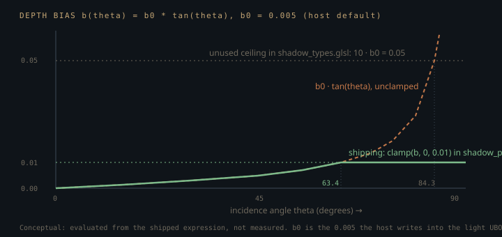

Monograph · Tree · ← Sitemap · Shadow includes
shaders
Shadow includes
CSM sampling, PCF, shadow types.
Three headers, one live include
`shaders/includes/shadow/` is laid out like a library: a PCF sampler, a cascade sampler with a Poisson kernel and a PCSS path, and a types header of structs, defaults and helpers. Exactly one of the three is ever pulled into a stage. Grepping the include directive across the whole shader tree returns a single hit, in the forward fragment shader:
#include "includes/shadow/shadow_pcf.glsl"shaders/core/forward.frag:64That hit needs qualifying immediately. `forward.frag` is the fallback stage: `render()` tries the RT pipelines first, then deferred, and reaches the forward pair only when neither is live — which no example in `examples/` ever arranges.
// Forward rendering pathohao/gpu/vulkan/renderer.cpp:393`shadow_csm.glsl` has no includer, but its math is not idle. The deferred lighting shader carries the same cascade-select loop inline:
if (viewDepth < cascades.splitDepths[i]) return i;shaders/core/deferred_lighting.frag:110Its PCF taps accumulate the same way round, too — 1.0 where the fragment is lit:
shadow += (projCoords.z - bias > pcfDepth) ? 0.0 : 1.0;shaders/core/deferred_lighting.frag:141What the header holds and that inline copy does not is the sixteen-tap Poisson kernel (the deferred version filters with a nine-tap box), the cross-cascade blend and the PCSS path. `shadow_types.glsl` is the one file with neither an includer nor a caller for any of its six functions. This page is mostly about the header that runs, and about what the other two would change if someone wired them in.
The include that has to come last
`shadow_pcf.glsl` takes the shadow map as a parameter but not the lights. It reaches into a uniform block named `lighting` that the *calling* file must already have declared, under that exact name, with those exact members:
// IMPORTANT: Caller must define LightUBO named 'lighting' before including this file!shaders/includes/shadow/shadow_pcf.glsl:8GLSL has no forward declaration for an interface block, so this is a purely textual ordering constraint that the compiler reports only as an undefined identifier. `forward.frag` declares the block at set 0, binding 1 and pulls the header in twenty-six lines further down, under a comment explaining why. Hoisting the includes to the top of the file — the reflex tidy-up — stops it compiling.
Passing the light data in as a parameter is what the same signature already does for `shadowMap`, and it was rejected here for a stated reason. The sampler takes an `int lightIndex`, never a `Light`, because — according to the header's own comment — copying the 128-byte struct (four `vec4`s plus a `mat4`) out of the UBO comes back corrupted on some drivers: {{cite shaders/includes/shadow/shadow_pcf.glsl "Some GPU drivers corrupt large struct copies (the 128-byte Light struct)"}} That comment is the only evidence in the tree — no driver named, no repro, no test — so read it as the author's recorded rationale rather than a reproduced finding. The code follows it regardless: every field is read by indexing the UBO directly, which is what forces the block to be visible by name, and the fragile include order is the price paid for it.
The first thing the function does with that index is read `params.z`, the shadow-map index the host writes, and return zero occlusion for any light whose value is negative — so the forward shader can call it once per light in the loop and let non-casters cost a single compare.
float shadowMapIndex = lighting.lights[lightIndex].params.z;shaders/includes/shadow/shadow_pcf.glsl:21Bias by the tangent of the incidence angle
A depth map records the occluder distance at texel centres. A receiver shaded anywhere else inside that texel is compared against a depth belonging to a point up to half a texel away, and on a surface tilted relative to the light that lateral offset turns into a depth error proportional to the surface slope. The constant subtracted before the comparison therefore has to grow with incidence angle:
Here $b_0$ is the host-supplied `shadowBias`, $N$ the shading normal, $L$ the unit direction from the surface to the light, and $\theta$ the incidence angle. The shader computes it in exactly that form, through `acos` then `tan`, rather than the algebraically equal $\sqrt{1-c^2}/c$:
float bias = lighting.shadowBias * tan(acos(cosTheta));shaders/includes/shadow/shadow_pcf.glsl:58$\tan\theta$ diverges at grazing incidence, so the clamp is load-bearing: without it a face edge-on to the light would push its comparison depth past every occluder in the map and light itself through walls. The ceiling is a bare literal `0.01`. `VulkanRenderer::updateLightBuffer` writes `shadowBias = 0.005f` into the light UBO every frame — the assignment sits in `ohao/gpu/vulkan/buffer_setup.cpp` and again, character for character, in the per-frame overload beside it — so that ceiling is $2b_0$, reached at $\theta = \arctan 2 \approx 63.4°$, past which the bias stops tracking slope entirely. `shadow_types.glsl` holds the identical formula in `calculateSlopeBias`, clamped instead to $10 b_0$, which would not saturate until 84.3°:
return clamp(bias, 0.0, baseBias * 10.0);shaders/includes/shadow/shadow_types.glsl:90
Same formula, two ceilings, and only the tighter one ships. The header's other defaults are worth the same scepticism: `DEFAULT_SHADOW_BIAS` does match the 0.005 the host writes, but `DEFAULT_SHADOW_STRENGTH` is 1.0 where the same function writes `shadowStrength = 0.7f`.
#define DEFAULT_SHADOW_STRENGTH 1.0shaders/includes/shadow/shadow_types.glsl:20Occlusion here, visibility there
The live header filters with a 5×5 grid at one-texel spacing — twenty-five taps, all weighted equally — and returns *occlusion*, pre-multiplied by the global strength:
return shadow * lighting.shadowStrength;shaders/includes/shadow/shadow_pcf.glsl:87const int pcfRadius = 2;shaders/includes/shadow/shadow_pcf.glsl:69`forward.frag` consumes it as `1 - shadow`, so with strength 0.7 a fully occluded fragment still keeps 30 % of that light's direct contribution — a deliberate lift out of black, applied uniformly rather than as any ambient or bounce term.
return contribution * (1.0 - shadow);shaders/core/forward.frag:134`shadow_csm.glsl` returns the opposite quantity from the same kind of loop: its taps accumulate 1.0 when the fragment is *lit*, and it has no strength factor at all.
shadow += (shadowCoords.z - bias > depth) ? 0.0 : 1.0;shaders/includes/shadow/shadow_csm.glsl:74A shader that included both headers would compile cleanly and shade one of the two results inverted. Nothing in the tree currently does, because nothing includes the second one.
One map, one light, resolved per vertex
The depth-write side is a matched pair whose fragment shader is empty on purpose — the pass has no colour attachment, so depth arrives straight from the rasteriser into one 2048² image sized by a single constant on the renderer:
constexpr uint32_t SHADOW_MAP_SIZE = 2048;ohao/gpu/vulkan/renderer.hpp:88The vertex shader is where the interesting choice sits. It walks the light UBO looking for the first entry with a non-negative shadow-map index and adopts that light's matrix, per vertex:
if (lightUbo.lights[i].params.z >= 0.0) {shaders/shadow/shadow_depth.vert:49The loop can never find two, because the host hands out at most one non-negative index. `updateLightBuffer` tags the first light whose `LightType` casts to 0 or 2 and leaves every other at −1 — and in the engine's enum 0 is not the directional light, it is `Sphere`, a point light:
Sphere = 0, // point light with radius (soft shadows)ohao/scene/component/light_component.hpp:11`Directional` is 1 and `Spot` is 2, so the qualifying set is point-or-spot and a sun never casts. That inversion is not cosmetic. The type the host packs into `position.w` is a *different* encoding — directional becomes 0, point becomes 1 — and `calculateLightSpaceMatrix` switches on that one, falling through to identity for anything that is neither directional nor spot:
// Point lights don't use a single matrix (need cube maps)ohao/gpu/vulkan/buffer_setup.cpp:248So whenever the tagged caster is a `Sphere`, it ships `params.z = 0` — a valid shadow-map index — alongside an identity light-space matrix, which both the depth pass and `shadow_pcf.glsl` then use as if it were a real projection.
The scan itself is a per-vertex re-derivation of a value the host already knows and could have pushed, and its failure mode is quiet rather than loud. It is reached from the other side of the same test: a scene lit only by `Directional` lights leaves every `params.z` at −1, the loop finds nothing, and the identity fallback survives, so the pass rasterises raw world coordinates as if they were clip space.
mat4 lightSpaceMatrix = mat4(1.0);shaders/shadow/shadow_depth.vert:46Nothing skips the pass to spare it that. The guard that would, `m_shadowsEnabled`, is initialised true and has no assignment anywhere in `ohao/`, `examples/` or `tests/`:
bool m_shadowsEnabled{true};ohao/gpu/vulkan/renderer.hpp:389`shadow_pcf.glsl` and the `shadow_depth` pair are live only on the forward path, the one `render()` falls through to and no example selects. The directory next door is not uniformly dead either: `shaders/shadow/` also holds `shadow_csm.vert` and `shadow_csm.geom`, which the deferred CSM pass loads. Editing `shadow_csm.glsl` or `shadow_types.glsl` changes nothing that renders — but the tangent-bias formula in the latter *is* live, inlined into `shadow_pcf.glsl` with a tighter clamp, so "unreferenced file" is not the same claim as "unused math".
Contracts
- `shadow_pcf.glsl` must be included *after* the caller declares a uniform block named `lighting` containing `lights[]`, `shadowBias` and `shadowStrength`. Reordering the includes is a compile error, and renaming the block is a compile error in a file that does not mention it.
- The function must keep taking a light *index*. The header states that binding a `Light` to a local corrupts on some drivers, and the whole naming coupling above exists to avoid it; the claim is unreproduced in this tree, but the code depends on it.
- `calculateShadowForLightIndex` returns occlusion in [0, `shadowStrength`], not visibility. `shadow_csm.glsl` returns visibility. Any future shader that pulls in both must invert one.
- The `shadow_depth` pass writes one map for whichever light the host tagged first, and nothing in either shader supports a second shadowed light. A `Sphere` light can be that first tag, and when it is, the matrix it ships with is identity — `calculateLightSpaceMatrix` has no cube-map path.
- `selectCascade` is declared in both `shadow_types.glsl` and `shadow_csm.glsl`. The arities differ — three arguments against two — so a file pulling in both gets an overload pair, not a redefinition error, and the two disagree about their first argument: the `shadow_types.glsl` version negates it to get a positive depth, the `shadow_csm.glsl` one expects it positive already. Feed a positive depth to the wrong overload and every fragment picks cascade 0.
- The normal-offset heuristics differ too. `shadow_types.glsl` exposes one as a function, `applyNormalOffset`, scaling by `(1 - N·L)`; `shadow_csm.glsl` has no such function and scales its normal bias by `1/(cascade+1)` inline inside `sampleCSM`, with no dependence on incidence angle. Neither is reachable from a pipeline today.
Source files
shaders/core/forward.fragohao/gpu/vulkan/renderer.cppshaders/core/deferred_lighting.fragshaders/includes/shadow/shadow_pcf.glslshaders/includes/shadow/shadow_types.glslshaders/includes/shadow/shadow_csm.glslohao/gpu/vulkan/renderer.hppshaders/shadow/shadow_depth.vertohao/scene/component/light_component.hppohao/gpu/vulkan/buffer_setup.cppshaders/shadow/shadow_depth.fragshaders/shadow/shadow_csm.vertParent hub for the full pipeline narrative; this page is the file-level design unit. Sitemap · hover glossary terms anywhere.